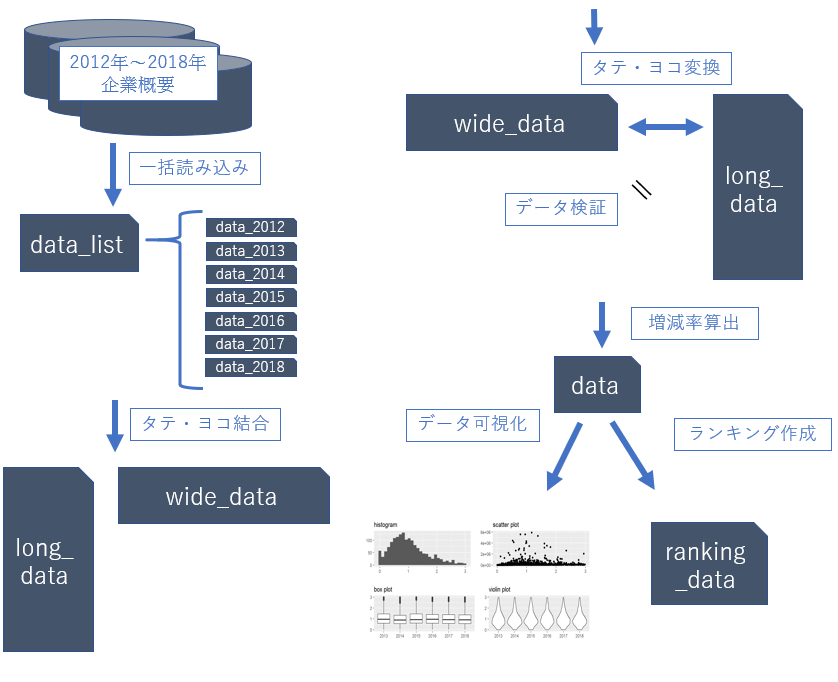
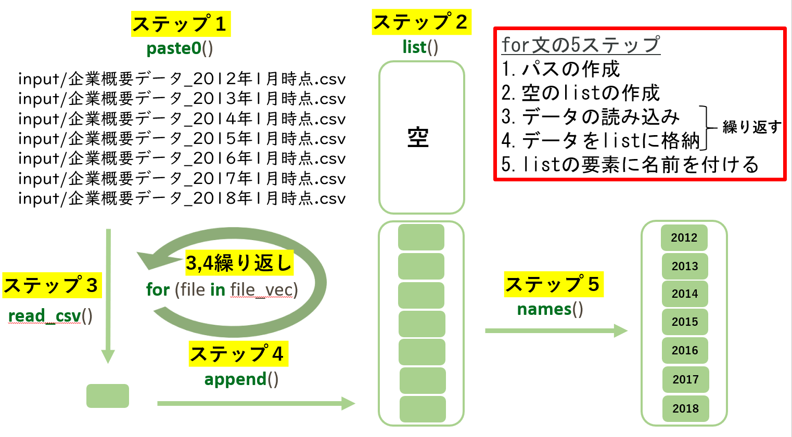
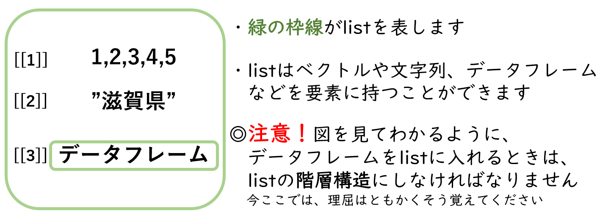
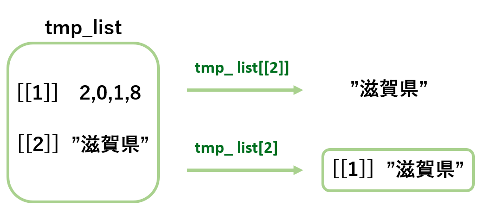
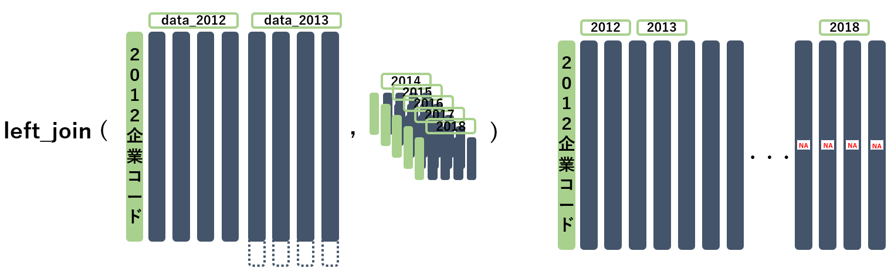

データ研磨スキル
[中級編前半]
2021/02/20
はじめに
中級の作業イメージ
左半分を前半、右半分を後半で進めていきます。

目次（中級前半）
- 複数ファイルの一括読み込み(イメージ)
- listの説明
- for文の説明
- 複数ファイルの一括読み込み(実装)
- 複数データの結合方法
- 複数データのタテ結合
- 複数データのヨコ結合
- 箸休め
複数ファイルの一括読み込み
(イメージ)
- 複数ファイルを効率よく読み込む方法のイメージを掴んでもらいます
読み込むデータの確認
- 2012年から2018年の企業概要ファイルを読み込みます
- 企業概要データ_2012年1月時点.csv
- 企業概要データ_2013年1月時点.csv
- 企業概要データ_2014年1月時点.csv
- 企業概要データ_2015年1月時点.csv
- 企業概要データ_2016年1月時点.csv
- 企業概要データ_2017年1月時点.csv
- 企業概要データ_2018年1月時点.csv
単純な方法
# 読み込むカラム型を決める
data_cols <- cols(
企業コード = col_character(),
本社所在地市区郡 = col_character(),
業種大分類 = col_character(),
`資本金(千円)` = col_double(),
従業員数 = col_double(),
最新期業績決算期年 = col_double(),
最新期業績決算期月 = col_double(),
`最新期業績売上高(百万円)` = col_double(),
`最新期業績税引後利益(千円)` = col_double(),
創業年 = col_double(),
設立年 = col_double()
)
# 2012年から2018年のデータを別々に読み込む
data_2012 <-
read_csv(here("input/企業概要データ_2012年1月時点.csv"),
locale = locale(encoding = "shift-jis"),
col_types = data_cols)
data_2013 <-
read_csv(here("input/企業概要データ_2013年1月時点.csv"),
locale = locale(encoding = "shift-jis"),
col_types = data_cols)
data_2014 <-
read_csv(here("input/企業概要データ_2014年1月時点.csv"),
locale = locale(encoding = "shift-jis"),
col_types = data_cols)
data_2015 <-
read_csv(here("input/企業概要データ_2015年1月時点.csv"),
locale = locale(encoding = "shift-jis"),
col_types = data_cols)
data_2016 <-
read_csv(here("input/企業概要データ_2016年1月時点.csv"),
locale = locale(encoding = "shift-jis"),
col_types = data_cols)
data_2017 <-
read_csv(here("input/企業概要データ_2017年1月時点.csv"),
locale = locale(encoding = "shift-jis"),
col_types = data_cols)
data_2018 <-
read_csv(here("input/企業概要データ_2018年1月時点.csv"),
locale = locale(encoding = "shift-jis"),
col_types = data_cols)- このコードでは、書くのが面倒・保守が面倒・変数が無駄に増えるなど、デメリットが多いです
for文を使用する方法
file_vec <- paste0("input/企業概要データ_",
2012:2018, "年1月時点.csv")
data_list <- list()
for (file in file_vec){
tmp_d <- read_csv(file = here(file),
locale = locale(encoding = "shift-jis"),
col_types = data_cols)
data_list <- append(data_list, list(tmp_d))
}
names(data_list) <- paste0("data_", 2012:2018)- for文とlistを使ったコードでは、書くのが楽・保守が楽・変数の節約などのメリットを享受できます
- 上記コードのイメージが次頁にあります
for文5ステップのイメージ

for文による繰り返し処理のススメ
- 一般的に、同様な処理を繰り返して行う際はfor文やmap（上級で解説）を使用してコーディングをします
- なぜなら、単純な方法で紹介したようなコードでも意図したプログラムを書けますが、コードが冗長になる・メンテナンスに労力がかかるなどのデメリットが多いからです
- 複数ファイルを読み込むという処理を通して、for文による繰り返し処理を使えるようになりましょう
- 次頁以降では、複数ファイルの一括読み込みで用いるlistとfor文の使用方法について先に説明した後に、for文を用いた複数ファイル一括読み込みを実装します
list
- listの使い方を勉強します
listとは
- listは一言でいえば拡張されたベクトルで、代表的には次の3つのような利点をもちます
- ベクトル、データフレームなどを要素にもつことができる
- listの階層構造を作ることができる
- 要素の追加や取り出しが容易にできる
- listは、中級および上級で必須のツールになります
- listについては以下の要点だけを説明しますが、より詳細な説明は下記リンクなどを参照してください
- listの作成
- listに要素を追加する
- listの要素にアクセス
- listの要素に名前をつける
listのイメージ

listの作成
- listは通常のベクトルとは違い、ベクトルや文字列、データフレームなどを同時に要素に持つことができます
[1] "2" "0" "1" "8" "滋賀県"[[1]]
[1] 2 0 1 8
[[2]]
[1] "滋賀県"listに要素を追加する
- append関数でlistに要素を追加できます
- 第一引数に対象のlist、第二引数に追加要素を要求します
appendまえ
[[1]]
[1] 2 0 1 8
[[2]]
[1] "滋賀県"appendあと
[[1]]
[1] 2 0 1 8
[[2]]
[1] "滋賀県"
[[3]]
# A tibble: 1 x 2
企業コード 従業員数
<dbl> <dbl>
1 101 50listの要素にアクセス
- listの第i番目の要素にアクセスするには、大かっこを2重にして[[i]]と書きます
- 大かっこが一重だとスライスされたlistが返されます
listの要素アクセスイメージ

- tmp_list[2]とスライスすると、“滋賀県”が一つ目の要素になるので、[[1]]“滋賀県”となってlistが返されます
listの要素に名前をつける
- listの要素名の参照・命名にはnames関数を使用します
- 名前はlistと同じ長さのベクトルで与えます
命名まえ
[[1]]
[1] 2 0 1 8
[[2]]
[1] "滋賀県"
[[3]]
# A tibble: 1 x 2
企業コード 従業員数
<dbl> <dbl>
1 101 50命名あと
$数列
[1] 2 0 1 8
$都道府県
[1] "滋賀県"
$データ
# A tibble: 1 x 2
企業コード 従業員数
<dbl> <dbl>
1 101 50listの要素に名前でアクセス
- listの要素に名前をつけると、以下の2種類の方法で要素名を用いてlistの要素へアクセスできるようになります
for文(繰り返し処理)
- for文の使い方を勉強します
for文イントロダクション
- 以下は1から3までの数字を順に表示するコードです
- どちらのコードを書くほうが楽でしょうか？
- 数字が1から1000までならどうでしょうか？
- このように同様な処理を繰り返し行うときにfor文を使用すると、とても効率的にコーディングができます
for文の使い方
- 繰り返し範囲に指定したベクトル（リストでも可）の要素が順番に変数に代入されます
- 各ループにおける処理を、中かっこ{}の中に書きます
- かっこ()と中かっこ{}を忘れないように注意しましょう
適当な変数名を考える
- for文で使用する変数には適当な名前をつけましょう
- 単なる序数の場合などはiやnを使用することが多いです
- たとえば2012年から2018年までの各年での繰り返し処理を行いたいときは、変数名をyearとするといいでしょう
[1] "input/企業概要データ_2012年1月時点.csv"
[1] "input/企業概要データ_2013年1月時点.csv"
[1] "input/企業概要データ_2014年1月時点.csv"
[1] "input/企業概要データ_2015年1月時点.csv"
[1] "input/企業概要データ_2016年1月時点.csv"
[1] "input/企業概要データ_2017年1月時点.csv"
[1] "input/企業概要データ_2018年1月時点.csv"listとfor文を用いた例
- 以下のようにしてlistとfor文を共に使うことが多いです
items <- c("ecnomics", "data science") # ベクトルを作成
my_list <- list() # 空のlistを作成
for(item in items){
my_list <- append(my_list, list(item)) # 要素を追加
}
names(my_list) <- c("経済", "データサイエンス") # 要素に命名
my_list$経済
[1] "ecnomics"
$データサイエンス
[1] "data science"上記のコードと同様にして、複数ファイルの一括読み込みも処理できそうです。実際にやってみましょう。
複数ファイルの一括読み込み
(実装)
- 複数ファイルを効率よく読み込む方法を実装します
for文の5ステップのイメージ(再掲)
では5つのステップを順番に実装していきましょう。
for文：ステップ１
- はじめに、ファイルのpathベクトルを作成します
- paste0（paste）関数は数値を入れると文字列に変換されます
- ベクトルを入れると同じ長さのベクトルで返されます
- このpathベクトルを繰り返し範囲としてfor文を使います
[1] "input/企業概要データ_2012年1月時点.csv"
[2] "input/企業概要データ_2013年1月時点.csv"
[3] "input/企業概要データ_2014年1月時点.csv"
[4] "input/企業概要データ_2015年1月時点.csv"
[5] "input/企業概要データ_2016年1月時点.csv"
[6] "input/企業概要データ_2017年1月時点.csv"
[7] "input/企業概要データ_2018年1月時点.csv"for文：ステップ２
- つぎに、読み込んだデータを格納するための空の箱、すなわち空のリストを作成します
- 空箱の名前はdata_listとします
list()for文：ステップ３,４,５
- 先ほど用意したpathベクトルを繰り返し範囲として、読み込むデータのpathを順番に変数へと与えていきます
- fileという変数に、file_vecの要素が順番に与えらます
- 各ループで読み込んだデータをtmp_d（仮データ）とします
- 読み込んだtmp_dをdata_listに追加します
- 一度listに追加したtmp_dは不要（上書きok）です
- for文終了後に、listの要素に名前をつけます
複数ファイル読み込みまとめ
# ステップ１：pathベクトルを作成する
file_vec <- paste0("input/企業概要データ_",
2012:2018,"年1月時点.csv")
# ステップ２：空のlistを作る
data_list <- list()
for (file in file_vec){
# ステップ３：データを読み込む
tmp_d <- read_csv(file = here(file),
locale = locale(encoding = "shift-jis"),
col_types = data_cols)
# ステップ４：データをlistに格納する
data_list <- append(data_list, list(tmp_d))
}
# ステップ５：listの要素に名前を付ける
names(data_list) <- paste0("data_", 2012:2018)複数ファイルの一括読み込み結果
- データ数が多いので表示はしませんが、コンソールにdata_listと入力すると結果を確認することができます
- 結果の確認にはglimpse関数やstr関数なども便利です
- listの要素に命名したので、下図のようにしてもdata_listに2012年から2018年までのデータが格納されていることが確認できます

複数データの結合方法
- タテとヨコ、2種類の結合方法の紹介をします
タテ結合とヨコ結合
- 複数データの結合には以下の2通りの方法があります
bind_rowsでタテに結合
（タテ持ちデータ）

joinでヨコに結合
（ヨコ持ちデータ）

- 先にタテ結合、次にヨコ結合の説明をします
複数データのタテ結合
- タテ結合を実装します
タテ結合結果
- 結合の際にyearカラムを新設することがポイントです
- 企業コード, yearの順でソートして表示しています
# A tibble: 14,972 x 12
企業コード year 従業員数 本社所在地市区郡 業種大分類 `資本金(千円)`
<chr> <int> <dbl> <chr> <chr> <dbl>
1 B02111302 2012 1254 34208_広島県府中市~ F:製造業 11722300
2 B02111302 2013 768 34208_広島県府中市~ F:製造業 9907700
3 B02111302 2014 1242 34208_広島県府中市~ F:製造業 6616800
4 B02111302 2015 1409 34208_広島県府中市~ F:製造業 7218100
5 B02111302 2016 728 34208_広島県府中市~ F:製造業 17733300
6 B02111302 2017 1401 34208_広島県府中市~ F:製造業 7440100
7 B02111302 2018 1096 34208_広島県府中市~ F:製造業 6818500
8 B02117802 2012 82 34207_広島県福山市~ G:卸売・小売業，~ 3556300
9 B02117802 2013 376 34207_広島県福山市~ G:卸売・小売業，~ 1777200
10 B02117802 2014 374 34207_広島県福山市~ G:卸売・小売業，~ 3568300
# ... with 14,962 more rows, and 6 more variables: 最新期業績決算期年 <dbl>,
# 最新期業績決算期月 <dbl>, `最新期業績売上高(百万円)` <dbl>,
# `最新期業績税引後利益(千円)` <dbl>, 創業年 <dbl>, 設立年 <dbl>タテ結合の手順
- for文とmutateを使って、data_listの全てのデータにyearカラムを作成する
- bind_rowsを使って、data_listのデータをタテ結合する
1. yearカラムの作成
yearカラムを作る理由
data_listの要素名にはyearの情報がありますが、個々のデータにはyearの情報がありません。そのため、このまま縦結合するとyearの情報が抜け落ちたデータになります。
data_listの要素名
[1] "data_2012" "data_2013" "data_2014" "data_2015" "data_2016" "data_2017"
[7] "data_2018"2012年のデータのカラム
[1] "企業コード" "本社所在地市区郡"
[3] "業種大分類" "資本金(千円)"
[5] "従業員数" "最新期業績決算期年"
[7] "最新期業績決算期月" "最新期業績売上高(百万円)"
[9] "最新期業績税引後利益(千円)" "創業年"
[11] "設立年" yearカラムの作成実装（１つ）
- まずは2012年のデータのみで実装してみましょう
- コードの汎用性を高めるために、yearカラムの値はdata_listの要素名からとってきます
data_year <- names(data_list)[1] %>% substr(6, 9)
data_list[["data_2012"]] <-
data_list[["data_2012"]] %>% mutate(year = data_year)
data_list[["data_2012"]] %>% relocate(year) # データ確認# A tibble: 2,176 x 12
year 企業コード 本社所在地市区郡 業種大分類 `資本金(千円)` 従業員数
<chr> <chr> <chr> <chr> <dbl> <dbl>
1 2012 G92155635 01103_北海道札幌市東区~ G:卸売・小売業，~ 1419800 197
2 2012 G92155065 13113_東京都渋谷区~ H:金融・保険業~ 8462000 1418
3 2012 G92143569 01104_北海道札幌市白石区~ G:卸売・小売業，~ 370700 535
4 2012 G92190707 01101_北海道札幌市中央区~ G:卸売・小売業，~ 639200 694
5 2012 G92515950 01105_北海道札幌市豊平区~ F:製造業 1958700 840
6 2012 G92508571 27128_大阪府大阪市中央区~ F:製造業 30041600 1436
7 2012 G92559088 01101_北海道札幌市中央区~ K:電気・ガス・水~ 83595900 2814
8 2012 G92552130 01104_北海道札幌市白石区~ E:建設業 2577500 2145
9 2012 G92557890 01110_北海道札幌市清田区~ F:製造業 4217000 461
10 2012 G92556303 01101_北海道札幌市中央区~ K:電気・ガス・水~ 3913100 769
# ... with 2,166 more rows, and 6 more variables: 最新期業績決算期年 <dbl>,
# 最新期業績決算期月 <dbl>, `最新期業績売上高(百万円)` <dbl>,
# `最新期業績税引後利益(千円)` <dbl>, 創業年 <dbl>, 設立年 <dbl>yearカラムの作成実装（すべて）
- 次は全てのデータに対してyearカラムを作成します
- 繰返し範囲は、1からdata_listの要素の長さです
- 毎ループごとにyearの情報を要素名から抜き出し、抜き出したyear情報をdataに付与しています
- year情報の抜き出しでは、listをスライスしているところに注意してください
- 前頁との違いは、for文と、要素名がdl_nameになっている部分のみです。結果は省略します
2. bind_rowsでタテ結合
- data_listを直接bind_rows関数にかけるだけで、listに入っているデータをすべてタテ結合することができます
- タテ結合したデータをlong_dataとします
# A tibble: 14,972 x 12
year 企業コード 本社所在地市区郡 業種大分類 `資本金(千円)` 従業員数
<chr> <chr> <chr> <chr> <dbl> <dbl>
1 2012 B02111302 34208_広島県府中市~ F:製造業 11722300 1254
2 2013 B02111302 34208_広島県府中市~ F:製造業 9907700 768
3 2014 B02111302 34208_広島県府中市~ F:製造業 6616800 1242
4 2015 B02111302 34208_広島県府中市~ F:製造業 7218100 1409
5 2016 B02111302 34208_広島県府中市~ F:製造業 17733300 728
6 2017 B02111302 34208_広島県府中市~ F:製造業 7440100 1401
7 2018 B02111302 34208_広島県府中市~ F:製造業 6818500 1096
8 2012 B02117802 34207_広島県福山市~ G:卸売・小売業，~ 3556300 82
9 2013 B02117802 34207_広島県福山市~ G:卸売・小売業，~ 1777200 376
10 2014 B02117802 34207_広島県福山市~ G:卸売・小売業，~ 3568300 374
# ... with 14,962 more rows, and 6 more variables: 最新期業績決算期年 <dbl>,
# 最新期業績決算期月 <dbl>, `最新期業績売上高(百万円)` <dbl>,
# `最新期業績税引後利益(千円)` <dbl>, 創業年 <dbl>, 設立年 <dbl>補足
- 初級編の参考で解説しましたが、bind_rowsでの結合は、カラム名が一致するものはカラム名で紐づきます
参考
- 今回のケースでは、データ読み込みの時点で個々のデータにyear情報を付与すると、より効率的になります
file_vec <- paste0("input/企業概要データ_", 2012:2018,"年1月時点.csv")
data_list <- list()
for (file in file_vec){
tmp_d <- read_csv(file = here(file),
locale = locale(encoding = "shift-jis"),
col_types = data_cols)
tmp_d <- tmp_d %>% # ここで読み込んだデータにyear付与
mutate(year = substr(file, 15, 18))
data_list <- append(data_list, list(tmp_d))
}
names(data_list) <- paste0("data_", 2012:2018)複数データのヨコ結合
- ヨコ結合を実装します
ヨコ結合結果
- カラム名の重複を避けるためとyear情報を保持するために、カラム名にyear情報を付与する部分がポイントです
# A tibble: 2,176 x 71
企業コード 業種大分類_2012 業種大分類_2013 業種大分類_2014 業種大分類_2015
<chr> <chr> <chr> <chr> <chr>
1 G92155635 G:卸売・小売業，飲食~ G:卸売・小売業，飲食~ G:卸売・小売業，飲食~ G:卸売・小売業，飲食~
2 G92155065 H:金融・保険業 H:金融・保険業 H:金融・保険業 H:金融・保険業
3 G92143569 G:卸売・小売業，飲食~ G:卸売・小売業，飲食~ G:卸売・小売業，飲食~ G:卸売・小売業，飲食~
4 G92190707 G:卸売・小売業，飲食~ G:卸売・小売業，飲食~ G:卸売・小売業，飲食~ G:卸売・小売業，飲食~
5 G92515950 F:製造業 F:製造業 F:製造業 F:製造業
6 G92508571 F:製造業 F:製造業 F:製造業 F:製造業
7 G92559088 K:電気・ガス・水道・~ K:電気・ガス・水道・~ K:電気・ガス・水道・~ K:電気・ガス・水道・~
8 G92552130 E:建設業 E:建設業 E:建設業 E:建設業
9 G92557890 F:製造業 F:製造業 F:製造業 F:製造業
10 G92556303 K:電気・ガス・水道・~ K:電気・ガス・水道・~ K:電気・ガス・水道・~ K:電気・ガス・水道・~
# ... with 2,166 more rows, and 66 more variables: 業種大分類_2016 <chr>,
# 業種大分類_2017 <chr>, 業種大分類_2018 <chr>,
# 最新期業績決算期月_2012 <dbl>, 最新期業績決算期月_2013 <dbl>,
# 最新期業績決算期月_2014 <dbl>, 最新期業績決算期月_2015 <dbl>,
# 最新期業績決算期月_2016 <dbl>, 最新期業績決算期月_2017 <dbl>,
# 最新期業績決算期月_2018 <dbl>, 最新期業績決算期年_2012 <dbl>,
# 最新期業績決算期年_2013 <dbl>, 最新期業績決算期年_2014 <dbl>,
# 最新期業績決算期年_2015 <dbl>, 最新期業績決算期年_2016 <dbl>,
# 最新期業績決算期年_2017 <dbl>, 最新期業績決算期年_2018 <dbl>,
# `最新期業績税引後利益(千円)_2012` <dbl>,
# `最新期業績税引後利益(千円)_2013` <dbl>,
# `最新期業績税引後利益(千円)_2014` <dbl>,
# `最新期業績税引後利益(千円)_2015` <dbl>,
# `最新期業績税引後利益(千円)_2016` <dbl>,
# `最新期業績税引後利益(千円)_2017` <dbl>,
# `最新期業績税引後利益(千円)_2018` <dbl>,
# `最新期業績売上高(百万円)_2012` <dbl>,
# `最新期業績売上高(百万円)_2013` <dbl>,
# `最新期業績売上高(百万円)_2014` <dbl>,
# `最新期業績売上高(百万円)_2015` <dbl>,
# `最新期業績売上高(百万円)_2016` <dbl>,
# `最新期業績売上高(百万円)_2017` <dbl>,
# `最新期業績売上高(百万円)_2018` <dbl>, `資本金(千円)_2012` <dbl>,
# `資本金(千円)_2013` <dbl>, `資本金(千円)_2014` <dbl>,
# `資本金(千円)_2015` <dbl>, `資本金(千円)_2016` <dbl>,
# `資本金(千円)_2017` <dbl>, `資本金(千円)_2018` <dbl>, 従業員数_2012 <dbl>,
# 従業員数_2013 <dbl>, 従業員数_2014 <dbl>, 従業員数_2015 <dbl>,
# 従業員数_2016 <dbl>, 従業員数_2017 <dbl>, 従業員数_2018 <dbl>,
# 設立年_2012 <dbl>, 設立年_2013 <dbl>, 設立年_2014 <dbl>, 設立年_2015 <dbl>,
# 設立年_2016 <dbl>, 設立年_2017 <dbl>, 設立年_2018 <dbl>, 創業年_2012 <dbl>,
# 創業年_2013 <dbl>, 創業年_2014 <dbl>, 創業年_2015 <dbl>, 創業年_2016 <dbl>,
# 創業年_2017 <dbl>, 創業年_2018 <dbl>, 本社所在地市区郡_2012 <chr>,
# 本社所在地市区郡_2013 <chr>, 本社所在地市区郡_2014 <chr>,
# 本社所在地市区郡_2015 <chr>, 本社所在地市区郡_2016 <chr>,
# 本社所在地市区郡_2017 <chr>, 本社所在地市区郡_2018 <chr>ヨコ結合の手順
- for文とrename_withを使って、data_listの各データのカラム名を適当に変更する
- for文と*_joinを使って、data_listの全てのデータをヨコ結合する
1. rename_withでカラム名の変更
- rename_withは、指定したカラムに対してカラム名変更の処理を一括で行うことができる関数です
- 企業コードはjoinのキーなので変更しません
- 例としてdata_2012のカラム名を一括変更します
data_list$data_2012 %>%
rename_with(.fn = paste0, # renameに使用する関数
.cols = -企業コード, # 対称のカラムを指定
"_", "2012") %>% # 上記関数の引数
colnames() [1] "企業コード" "本社所在地市区郡_2012"
[3] "業種大分類_2012" "資本金(千円)_2012"
[5] "従業員数_2012" "最新期業績決算期年_2012"
[7] "最新期業績決算期月_2012" "最新期業績売上高(百万円)_2012"
[9] "最新期業績税引後利益(千円)_2012" "創業年_2012"
[11] "設立年_2012" - ではfor文とrename_withを使って、data_listの各データの変数名を一括変更しましょう
for (dl_name in names(data_list)) {
data_year <- dl_name %>% substr(6, 9)
data_list[[dl_name]] <- data_list[[dl_name]] %>%
rename_with(paste0, -企業コード, "_", data_year)
}
data_list %>% map(colnames) # map関数の説明は後ほど$data_2012
[1] "企業コード" "本社所在地市区郡_2012"
[3] "業種大分類_2012" "資本金(千円)_2012"
[5] "従業員数_2012" "最新期業績決算期年_2012"
[7] "最新期業績決算期月_2012" "最新期業績売上高(百万円)_2012"
[9] "最新期業績税引後利益(千円)_2012" "創業年_2012"
[11] "設立年_2012"
$data_2013
[1] "企業コード" "本社所在地市区郡_2013"
[3] "業種大分類_2013" "資本金(千円)_2013"
[5] "従業員数_2013" "最新期業績決算期年_2013"
[7] "最新期業績決算期月_2013" "最新期業績売上高(百万円)_2013"
[9] "最新期業績税引後利益(千円)_2013" "創業年_2013"
[11] "設立年_2013"
$data_2014
[1] "企業コード" "本社所在地市区郡_2014"
[3] "業種大分類_2014" "資本金(千円)_2014"
[5] "従業員数_2014" "最新期業績決算期年_2014"
[7] "最新期業績決算期月_2014" "最新期業績売上高(百万円)_2014"
[9] "最新期業績税引後利益(千円)_2014" "創業年_2014"
[11] "設立年_2014"
$data_2015
[1] "企業コード" "本社所在地市区郡_2015"
[3] "業種大分類_2015" "資本金(千円)_2015"
[5] "従業員数_2015" "最新期業績決算期年_2015"
[7] "最新期業績決算期月_2015" "最新期業績売上高(百万円)_2015"
[9] "最新期業績税引後利益(千円)_2015" "創業年_2015"
[11] "設立年_2015"
$data_2016
[1] "企業コード" "本社所在地市区郡_2016"
[3] "業種大分類_2016" "資本金(千円)_2016"
[5] "従業員数_2016" "最新期業績決算期年_2016"
[7] "最新期業績決算期月_2016" "最新期業績売上高(百万円)_2016"
[9] "最新期業績税引後利益(千円)_2016" "創業年_2016"
[11] "設立年_2016"
$data_2017
[1] "企業コード" "本社所在地市区郡_2017"
[3] "業種大分類_2017" "資本金(千円)_2017"
[5] "従業員数_2017" "最新期業績決算期年_2017"
[7] "最新期業績決算期月_2017" "最新期業績売上高(百万円)_2017"
[9] "最新期業績税引後利益(千円)_2017" "創業年_2017"
[11] "設立年_2017"
$data_2018
[1] "企業コード" "本社所在地市区郡_2018"
[3] "業種大分類_2018" "資本金(千円)_2018"
[5] "従業員数_2018" "最新期業績決算期年_2018"
[7] "最新期業績決算期月_2018" "最新期業績売上高(百万円)_2018"
[9] "最新期業績税引後利益(千円)_2018" "創業年_2018"
[11] "設立年_2018" 2. left_joinでヨコ結合
- for文を用い、data_2012の企業コードをおおもとのキーとして、すべてのデータを企業コードでleft_joinします
- 最初はdata_2012自身とleft_joinし、次に2013, 2014,…,2018とleft_joinしていきます

注意点
- 2012年の企業コードに含まれない企業コードがあるデータ、あるいは2012年の企業コードが存在しないデータは、次のようになります
- 2012年の企業コードと一致しないデータはjoinされない
- 2012年の企業コードが無い年ではデータが欠損(NA)となる

実装と確認
wide_data <- data_list[["data_2012"]] %>% select(企業コード)
for (data in data_list) {
wide_data <- wide_data %>%
left_join(data, by = "企業コード")
}
wide_data# A tibble: 2,176 x 71
企業コード 本社所在地市区郡_2012~ 業種大分類_2012 `資本金(千円)_2012`~ 従業員数_2012
<chr> <chr> <chr> <dbl> <dbl>
1 G92155635 01103_北海道札幌市東区~ G:卸売・小売業，飲食~ 1419800 197
2 G92155065 13113_東京都渋谷区~ H:金融・保険業 8462000 1418
3 G92143569 01104_北海道札幌市白石区~ G:卸売・小売業，飲食~ 370700 535
4 G92190707 01101_北海道札幌市中央区~ G:卸売・小売業，飲食~ 639200 694
5 G92515950 01105_北海道札幌市豊平区~ F:製造業 1958700 840
6 G92508571 27128_大阪府大阪市中央区~ F:製造業 30041600 1436
7 G92559088 01101_北海道札幌市中央区~ K:電気・ガス・水道・~ 83595900 2814
8 G92552130 01104_北海道札幌市白石区~ E:建設業 2577500 2145
9 G92557890 01110_北海道札幌市清田区~ F:製造業 4217000 461
10 G92556303 01101_北海道札幌市中央区~ K:電気・ガス・水道・~ 3913100 769
# ... with 2,166 more rows, and 66 more variables:
# 最新期業績決算期年_2012 <dbl>, 最新期業績決算期月_2012 <dbl>,
# `最新期業績売上高(百万円)_2012` <dbl>,
# `最新期業績税引後利益(千円)_2012` <dbl>, 創業年_2012 <dbl>,
# 設立年_2012 <dbl>, 本社所在地市区郡_2013 <chr>, 業種大分類_2013 <chr>,
# `資本金(千円)_2013` <dbl>, 従業員数_2013 <dbl>,
# 最新期業績決算期年_2013 <dbl>, 最新期業績決算期月_2013 <dbl>,
# `最新期業績売上高(百万円)_2013` <dbl>,
# `最新期業績税引後利益(千円)_2013` <dbl>, 創業年_2013 <dbl>,
# 設立年_2013 <dbl>, 本社所在地市区郡_2014 <chr>, 業種大分類_2014 <chr>,
# `資本金(千円)_2014` <dbl>, 従業員数_2014 <dbl>,
# 最新期業績決算期年_2014 <dbl>, 最新期業績決算期月_2014 <dbl>,
# `最新期業績売上高(百万円)_2014` <dbl>,
# `最新期業績税引後利益(千円)_2014` <dbl>, 創業年_2014 <dbl>,
# 設立年_2014 <dbl>, 本社所在地市区郡_2015 <chr>, 業種大分類_2015 <chr>,
# `資本金(千円)_2015` <dbl>, 従業員数_2015 <dbl>,
# 最新期業績決算期年_2015 <dbl>, 最新期業績決算期月_2015 <dbl>,
# `最新期業績売上高(百万円)_2015` <dbl>,
# `最新期業績税引後利益(千円)_2015` <dbl>, 創業年_2015 <dbl>,
# 設立年_2015 <dbl>, 本社所在地市区郡_2016 <chr>, 業種大分類_2016 <chr>,
# `資本金(千円)_2016` <dbl>, 従業員数_2016 <dbl>,
# 最新期業績決算期年_2016 <dbl>, 最新期業績決算期月_2016 <dbl>,
# `最新期業績売上高(百万円)_2016` <dbl>,
# `最新期業績税引後利益(千円)_2016` <dbl>, 創業年_2016 <dbl>,
# 設立年_2016 <dbl>, 本社所在地市区郡_2017 <chr>, 業種大分類_2017 <chr>,
# `資本金(千円)_2017` <dbl>, 従業員数_2017 <dbl>,
# 最新期業績決算期年_2017 <dbl>, 最新期業績決算期月_2017 <dbl>,
# `最新期業績売上高(百万円)_2017` <dbl>,
# `最新期業績税引後利益(千円)_2017` <dbl>, 創業年_2017 <dbl>,
# 設立年_2017 <dbl>, 本社所在地市区郡_2018 <chr>, 業種大分類_2018 <chr>,
# `資本金(千円)_2018` <dbl>, 従業員数_2018 <dbl>,
# 最新期業績決算期年_2018 <dbl>, 最新期業績決算期月_2018 <dbl>,
# `最新期業績売上高(百万円)_2018` <dbl>,
# `最新期業績税引後利益(千円)_2018` <dbl>, 創業年_2018 <dbl>,
# 設立年_2018 <dbl>建設的な方法
- 必要なデータが決まっている場合は、以下のようにして結合する変数を選択してjoinをすると建設的です
wide_emp <- data_list[["data_2012"]] %>% select(企業コード)
for (dl_name in names(data_list)) {
wide_emp <- wide_emp %>%
left_join(
data_list[[dl_name]] %>% # containsは後ほど解説
select(企業コード, contains("従業員数")),
by = "企業コード")
}
wide_emp# A tibble: 2,176 x 8
企業コード 従業員数_2012 従業員数_2013 従業員数_2014 従業員数_2015
<chr> <dbl> <dbl> <dbl> <dbl>
1 G92155635 197 45 241 194
2 G92155065 1418 2049 3632 2615
3 G92143569 535 13 611 471
4 G92190707 694 960 778 566
5 G92515950 840 722 783 794
6 G92508571 1436 737 1472 1062
7 G92559088 2814 10884 3735 7194
8 G92552130 2145 2772 1568 1465
9 G92557890 461 556 555 674
10 G92556303 769 201 770 413
# ... with 2,166 more rows, and 3 more variables: 従業員数_2016 <dbl>,
# 従業員数_2017 <dbl>, 従業員数_2018 <dbl>補足
- 2012年のデータのレコード数と、すべてのデータをヨコ結合したデータのレコード数が同数であることが確認できます
[1] 2176[1] 2176参考
- 欠損値の可視化をする便利なパッケージもあります
- パッケージ名::関数()と書くことで、どのパッケージの関数を使うか明示することができます
箸休めスライド
- map関数
- selectのhelper関数
map関数
- mapとは、ベクトルを関数にかける関数の1つで、高階関数とも呼ばれます
- 返り値はベクトルと同じ長さのlistです
- ポイントは、引数を関数の後ろに続けて書くことです
- 詳細は上級編で解説します
- rename_withのところで使ったmapは、data_listの2012年から2018年の7つのデータに対して、colnames関数をかけた結果が、listとして返ってきていました
$data_2012
[1] "企業コード" "本社所在地市区郡_2012"
[3] "業種大分類_2012" "資本金(千円)_2012"
[5] "従業員数_2012" "最新期業績決算期年_2012"
[7] "最新期業績決算期月_2012" "最新期業績売上高(百万円)_2012"
[9] "最新期業績税引後利益(千円)_2012" "創業年_2012"
[11] "設立年_2012"
$data_2013
[1] "企業コード" "本社所在地市区郡_2013"
[3] "業種大分類_2013" "資本金(千円)_2013"
[5] "従業員数_2013" "最新期業績決算期年_2013"
[7] "最新期業績決算期月_2013" "最新期業績売上高(百万円)_2013"
[9] "最新期業績税引後利益(千円)_2013" "創業年_2013"
[11] "設立年_2013"
$data_2014
[1] "企業コード" "本社所在地市区郡_2014"
[3] "業種大分類_2014" "資本金(千円)_2014"
[5] "従業員数_2014" "最新期業績決算期年_2014"
[7] "最新期業績決算期月_2014" "最新期業績売上高(百万円)_2014"
[9] "最新期業績税引後利益(千円)_2014" "創業年_2014"
[11] "設立年_2014"
$data_2015
[1] "企業コード" "本社所在地市区郡_2015"
[3] "業種大分類_2015" "資本金(千円)_2015"
[5] "従業員数_2015" "最新期業績決算期年_2015"
[7] "最新期業績決算期月_2015" "最新期業績売上高(百万円)_2015"
[9] "最新期業績税引後利益(千円)_2015" "創業年_2015"
[11] "設立年_2015"
$data_2016
[1] "企業コード" "本社所在地市区郡_2016"
[3] "業種大分類_2016" "資本金(千円)_2016"
[5] "従業員数_2016" "最新期業績決算期年_2016"
[7] "最新期業績決算期月_2016" "最新期業績売上高(百万円)_2016"
[9] "最新期業績税引後利益(千円)_2016" "創業年_2016"
[11] "設立年_2016"
$data_2017
[1] "企業コード" "本社所在地市区郡_2017"
[3] "業種大分類_2017" "資本金(千円)_2017"
[5] "従業員数_2017" "最新期業績決算期年_2017"
[7] "最新期業績決算期月_2017" "最新期業績売上高(百万円)_2017"
[9] "最新期業績税引後利益(千円)_2017" "創業年_2017"
[11] "設立年_2017"
$data_2018
[1] "企業コード" "本社所在地市区郡_2018"
[3] "業種大分類_2018" "資本金(千円)_2018"
[5] "従業員数_2018" "最新期業績決算期年_2018"
[7] "最新期業績決算期月_2018" "最新期業績売上高(百万円)_2018"
[9] "最新期業績税引後利益(千円)_2018" "創業年_2018"
[11] "設立年_2018" selectのhelper関数
- selectで使用できるhelper関数というのがあります
- これらは特定のカラム抽出に便利なので、覚えましょう
- starts_with
- 特定の文字列から始まるカラムを選択
- ends_with
- 特定の文字列で終わるカラムを選択
- contains
- 特定の文字列を含むカラムを選択
- starts_with
- 下記コードでは、「従業員数」という文字列を含むカラムと企業コードをselectしています